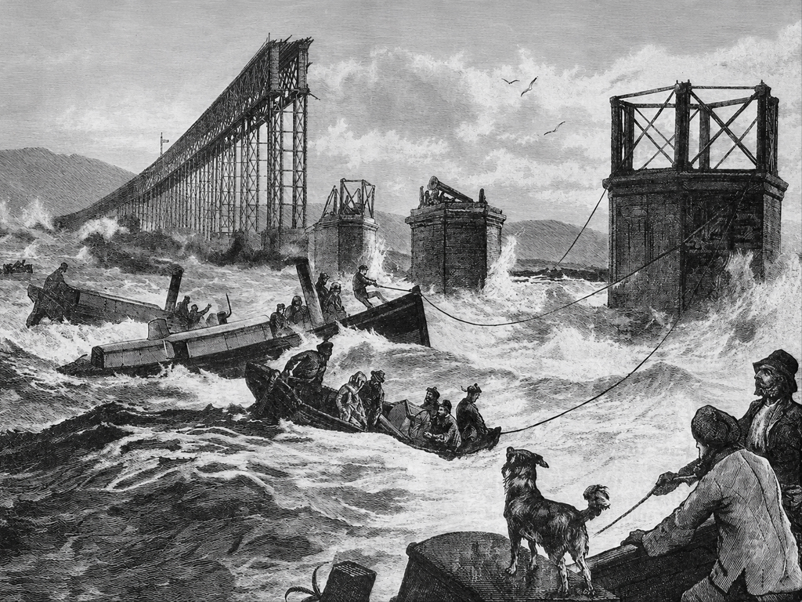
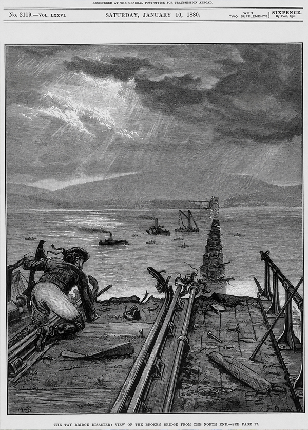
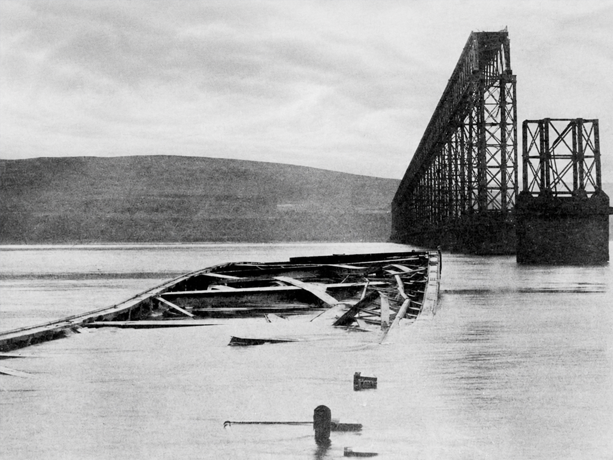
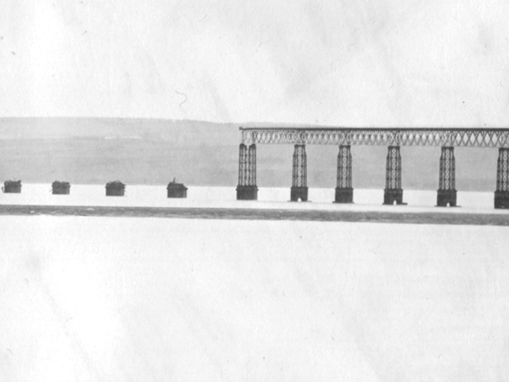
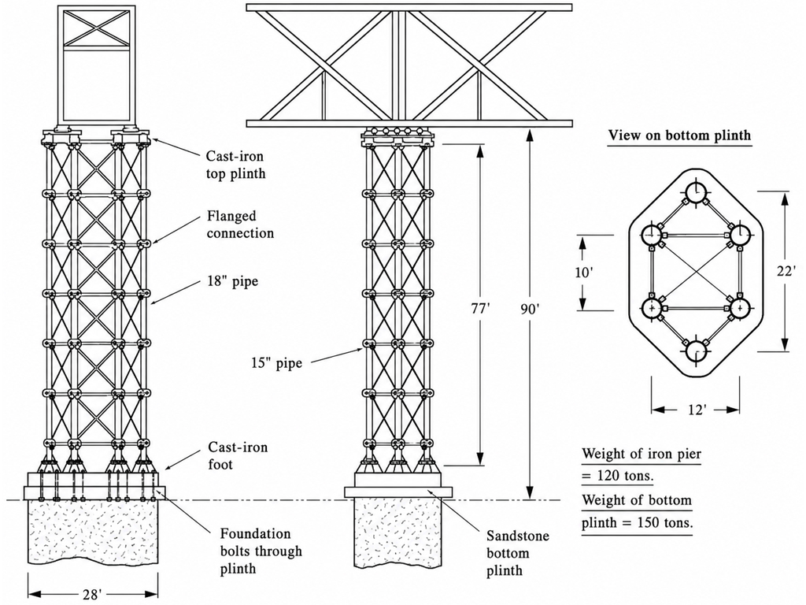
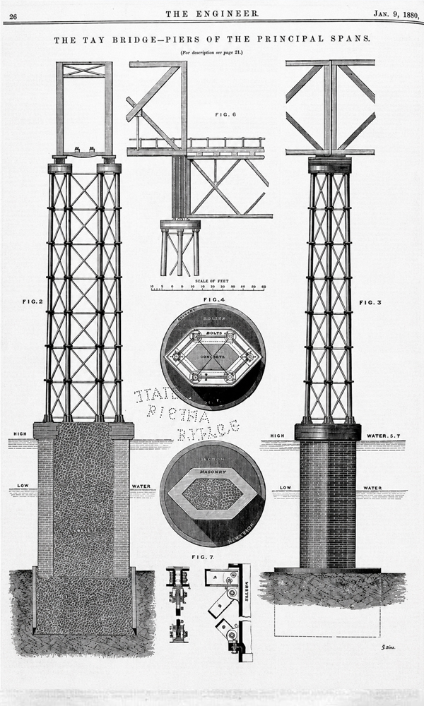
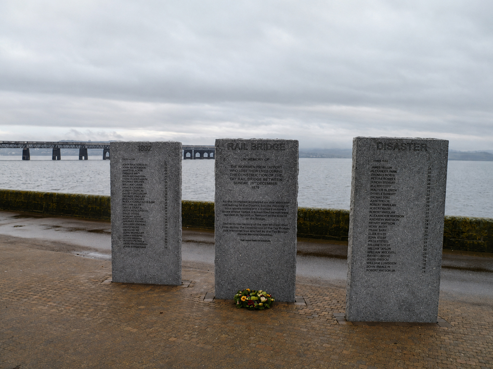

TAY BRIDGE COLLAPSE 1879
In the early 1870s the task of bridging two great Scottish estuaries was commissioned to the engineer Thomas Bouch.
For decades these wide tidal waters had formed major obstacles to efficient railway transport in eastern Scotland, severely slowing journeys between the industrial centres of the south and the developing towns of the north.
Although the commission came late in Bouch’s career, the idea itself was not new. He had first proposed bridging both estuaries as early as 1849 while serving as engineer and manager to the North British Railway.
At that time the proposal was rejected by the railway’s directors, who dismissed it as impractical and risky. Competing railway companies also opposed the idea, recognising that fixed crossings would significantly strengthen the competitive position of the North British Railway.
By 1871 attitudes had shifted and approval was finally granted.


Design and Construction
The Tay Bridge was originally planned to be completed by 1874 at a cost slightly above two hundred thousand pounds. Construction delays arose due to several factors, most notably inadequate initial sounding of the river bed.
Solid rock was found at greater depths than expected, requiring substantial redesign of the foundations. The bridge ultimately opened in 1878 at a cost exceeding the original estimate by more than sixty percent.
At completion the Tay Bridge was the longest railway bridge in the world, extending over three kilometres, and it was widely celebrated as an extraordinary engineering achievement. The structure carried a single railway track and consisted of 85 wrought iron lattice truss spans, 72 shorter deck spans and 13 elevated high girder spans positioned at the centre of the crossing to allow for ship navigation.
These high girders were trough trusses, meaning that trains ran between the trusses rather than above them. This arrangement maximised clearance for ships while minimising the gradient for trains. Eleven of the elevated spans were 75 metres long and two were 69 metres long.
This design provided greater clearance for ships passing beneath the bridge while also reducing the gradient that trains had to climb.
Structural Form & Materials
Truss columns to high through truss
The high girder spans were supported on tall truss columns formed from groups of six cast iron circular hollow cylinders, braced together with wrought iron horizontal and diagonal members.
The through trusses were braced at their upper levels to resist lateral sway while still maintaining adequate clearance for trains.
Additional secondary members were provided to transfer loads efficiently from the track deck into the truss system.
Load from the trains was transferred through floor beams into the trusses and then carried either upward in tension or downward in compression depending on whether the span was a high girder or a deck girder. These secondary members were essential to avoid excessive bending in the main chords.
Bouch had constructed similar railway bridges previously, though none approached the scale or exposure of the Tay Bridge.

Early Concerns and Warning Signs
Despite public praise, doubts regarding the bridge’s stability emerged early. The Times commented on its slender appearance and John Fowler, a fellow bridge engineer, expressed serious concerns, forbidding his family from crossing it.
During construction two high girders were damaged in a storm, an incident that foreshadowed later events. Following inspection before opening, a speed restriction of 25mph was imposed. While partly due to track gradients and derailment risk, it also reflected unease regarding the bridge’s behaviour in high wind.
Soon after opening, signs of distress became evident. Defects were reported in the cast iron cylinders, including cracks and hidden repairs.
Piers showed signs of cracking and scour was observed around foundations. More critically the diagonal bracing in the truss columns repeatedly worked loose. Maintenance crews reported rattling noises and visible swaying of the towers as trains passed, while passengers complained of vibration and lateral movement.

“Maintenance crews reported rattling noises and visible swaying of the towers as trains passed.”
Structural Issues to Truss Columns
The truss columns relied on wrought iron diagonal bars connected to the cast iron cylinders through cast iron gusset plates formed integrally with the cylinders. To accommodate construction tolerances one end of each diagonal featured an elongated hole secured during assembly with small tapered wedges.
These wedges proved vulnerable to loosening under repeated vibration, effectively rendering the diagonals inactive. Compounding this problem, the flat bar diagonals were incapable of carrying compressive forces due to buckling.
As a result, the truss columns functioned as statically determinate systems reliant on a single set of diagonals in tension. This doubled the force in those members compared to a fully braced system.
Once tension diagonals loosened or fractured, the affected panels behaved as frames rather than trusses, this introduces bending moments into the cast iron cylinders. As cast iron is brittle, it offers no capacity for stress redistribution. This makes sudden fracture likely.
Wind Loading & Dynamic Effects
At the time of design wind loading was poorly understood and widely underestimated. Bouch admitted during the later inquiry that the combined effects of wind and train loading had not been considered.
No additional wind bracing was provided beneath the deck and the structure relied almost entirely on its self-weight and assumed permeability to wind. Contemporary British wind pressure values dated from the 1700s and were far lower than those used in France and the United States.
The design considered that the wind loads would be negligible for lattice structures and did not take into account wind loads on the trains.
The truss columns were susceptible to resonant vibration from wind gusts and thrust induced by trains and the curvature of the bridge. Damage during construction left a slight curvature in one section of track, producing lateral thrust each time a locomotive passed.
These repeated vibrations reduced stiffness over time.
High Girder Section Piers
Three possible fracture scenarios were noted to the base of the piers:
- Complete rupture, or brittle fracture, of the cylinder above the foot
- Rupture of the anchor bolts
- Loss of anchorage in the brick pier
High girder pier base

Collapse of the Bridge
On the evening of 28 December 1879, a violent storm swept the Tay estuary. Despite worsening conditions railway traffic continued. As a mail train entered the bridge strong gusts exerted extreme lateral forces on both the structure and the train itself, which acted like a large elevated wind sail.
Shortly after entering the high girder section the bridge failed catastrophically. Ten of the twelve truss columns fractured at their bases with the remaining two failing slightly above. Nearly one kilometre of the bridge collapsed into the river, taking the train and all 75 occupants with it.
Failure likely initiated at the base of the truss columns through rupture of cast iron cylinders, failure of anchorage bolts or loss of anchorage within the brick piers. Evidence recovered after the collapse confirmed widespread fracture of gusset plates and anchorage components.


Inquiry Findings
The Court of Inquiry concluded that the collapse resulted from inadequate cross bracing and insufficient fastenings to resist wind forces. The absence of additional stabilising legs for the tall truss columns was identified as a critical deficiency.
The disaster led to immediate changes in engineering practice. Wind loading values were significantly increased and greater emphasis was placed on dynamic effects and redundancy.
Work on the proposed Forth Bridge was halted and Bouch’s suspension bridge design abandoned. He died less than a year after the collapse.
“Extreme stability, redundancy and rigorous material testing defined the new generation of bridge engineering.”
Lessons Learned
A new Tay Bridge opened in 1887, incorporating robust wrought iron tubular arches and far stronger intermediate supports.
Some girders from the original bridge were reused and the original brick piers were left in place as breakwaters and collision protection. The locomotive from the wrecked train was also salvaged and returned to service.
The lessons from the Tay Bridge failure directly informed the design of the Forth Bridge, completed in 1890. Cast iron was abandoned entirely and steel was adopted as the primary structural material.
Extreme stability, redundancy and rigorous material testing defined the new generation of bridge engineering.
The Tay Bridge was fatally flawed from the moment it entered service. Its great height, inadequate wind resistance and brittle materials made collapse inevitable. The storm of December 1879 merely accelerated an outcome that would have occurred sooner or later.